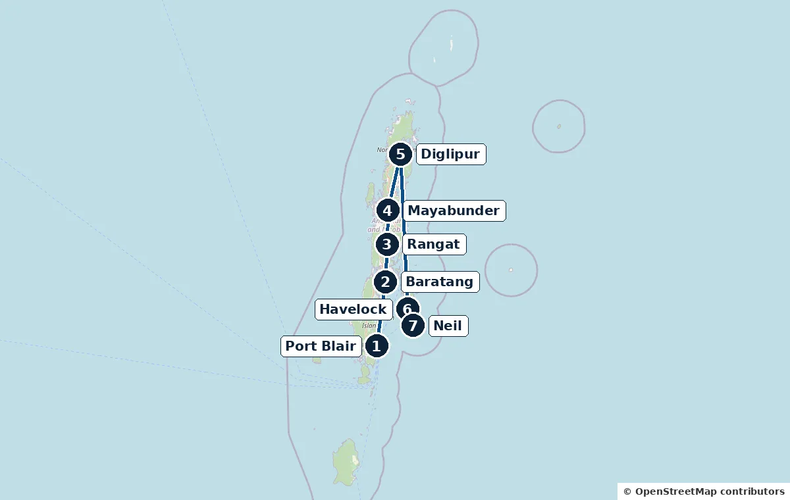
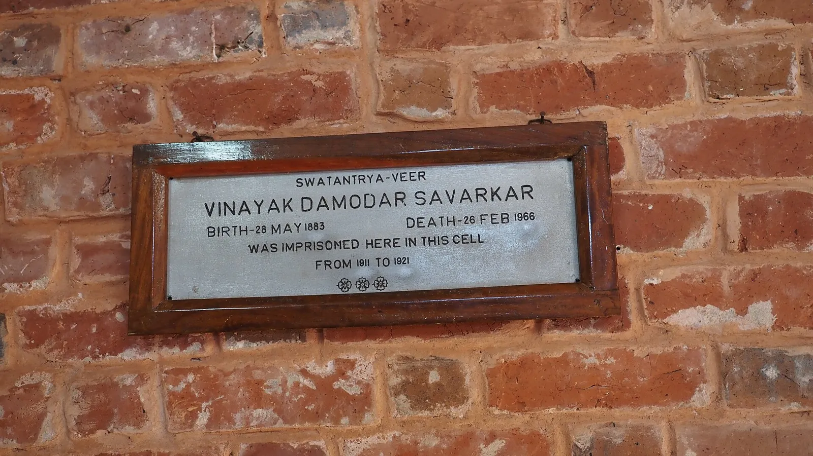
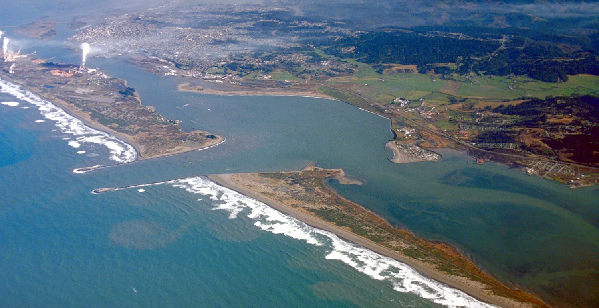
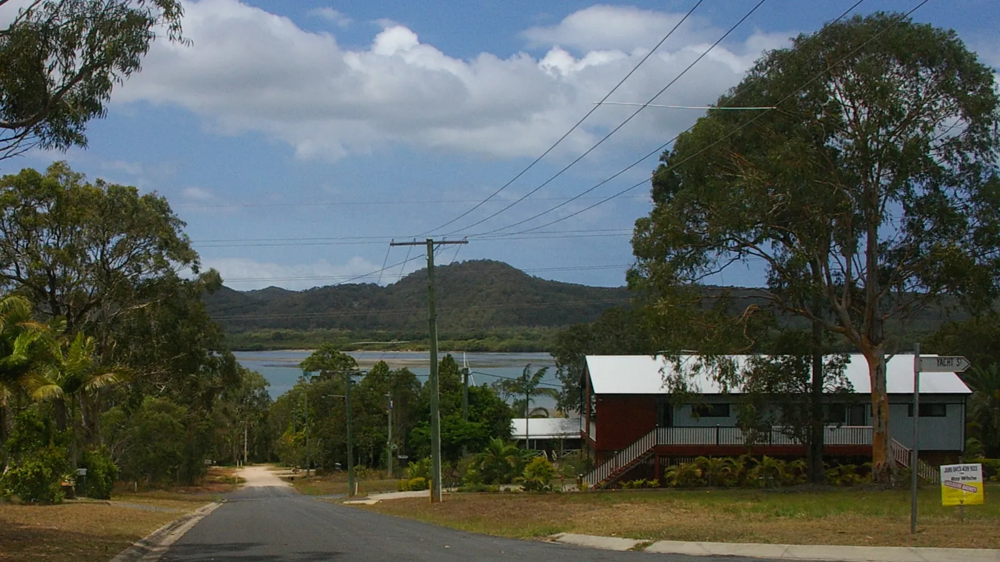
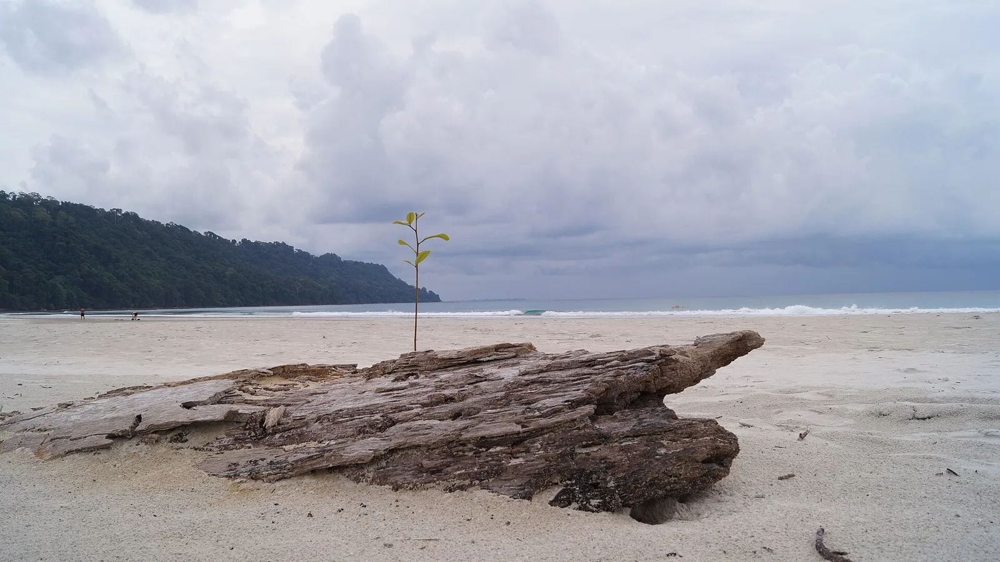
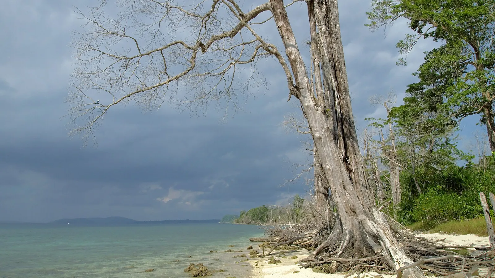
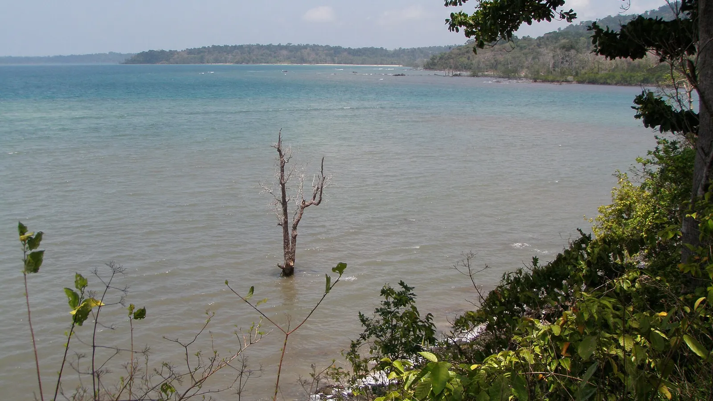

Most Andaman trips stop at Havelock. This one goes to the far north, to the sandbar that joins Ross and Smith islands at Diglipur, and comes back through the limestone caves of Baratang before the classic islands. Private ferries link Port Blair, Havelock and Neil, and every boat time is planned around the tides.
Trip highlights
- Cellular Jail and its evening light-and-sound show
- Ross & Smith, two islands joined by a white sandbar, near Diglipur
- Mangrove creek boat and limestone caves at Baratang
- North Bay coral and Ross (Netaji Subhas Chandra Bose) Island
- Radhanagar (Beach No. 7) on Havelock at sunset
- Elephant Beach snorkelling and the natural rock bridge on Neil Island
Your week at a glance
- Day 1Port Blair and the Cellular JailArrival day
- Day 2North through the forests to DiglipurLong road day
- Day 3Ross & Smith: two islands, one sandbarIsland day
- Day 4Baratang caves and mangroves, back to Port BlairLong road day
- Day 5North Bay coral and Ross IslandIsland day
- Day 6Private ferry to Havelock and Radhanagar at sunsetFerry day
- Day 7Elephant Beach snorkellingBeach day
- Day 8Neil Island's beaches and rock bridgeFerry day
- Day 9Back to Port BlairFerry day
- Day 10Fly homeDeparture

Route: Port Blair » Baratang » Rangat » Mayabunder » Diglipur » Havelock » Neil » Port Blair
Day-by-day itinerary
Port Blair and the Cellular Jail

- Airport to hotel 15 minutes
- Jail entry closes about 15:45
- Show about 18:00
On landing
Meet your driver at Veer Savarkar Airport
Rest at the hotel if you landed early.
About 14:30
Cellular Jail (Kala Pani)
The colonial prison where freedom fighters were held. Walk the radial wings and climb to the central tower.
CARECars drop you about 400 m from the gate; vehicles cannot wait outside.
About 18:00
Light-and-sound show
The story of the freedom struggle told inside the jail.
TIMEHindi and English shows run at set times, subject to tickets.
On the mapCellular Jail
North through the forests to Diglipur

- Leave about 04:00
- About 300 km, 10 hours
- Two vehicle ferries
About 04:00
Leave Port Blair
Reach the Jirkatang check post for the first forest convoy.
CAREThe road crosses the Jarawa tribal reserve in escorted convoys. Stopping, photography and any contact are strictly illegal.
Morning
Middle Strait ferry
A short vehicle ferry to Baratang.
Afternoon
Rangat and Mayabunder
Lunch on the way.
Lunch Not included · About INR 300 per person
Evening
Arrive Diglipur
Facing Saddle Peak, the highest point in the islands.
On the mapJirkatang Check PostPristine Beach Resort Diglipur
Ross & Smith: two islands, one sandbar

- Boat about 20 minutes
- About 3 hours on the island
- Tide dependent
Morning
Aerial Bay jetty
Shared speedboats run by rotation; there can be a wait.
TIMEAt low tide you walk the sandbar between the islands; at high tide it disappears.
Late morning
Ross & Smith Islands
Swim in calm, clear water off the sandbar.
WEARSwimwear under clothes, towel, cap and reef-safe sunscreen. There are no shops.
Afternoon
Back to the resort
Optional: Kalipur beach, where turtles nest from December to March.
On the mapAerial Bay JettyRoss and Smith Island
Baratang caves and mangroves, back to Port Blair

- About 300 km, 10 hours
- Baratang closed Mondays
- 1 km walk to the caves
Early morning
Leave Diglipur
Midday
Baratang mangrove creek and limestone caves
A shared boat through mangrove tunnels, then a 1 km forest walk to the caves.
TIMEBaratang excursions do not run on Mondays; we plan the dates around it.
Evening
Arrive Port Blair
On the mapBaratang Limestone Caves
North Bay coral and Ross Island

- Boats from the Water Sports Complex
- Last Ross Island boat about 14:00
Morning
North Bay Island
Glass-bottom boat, snorkelling or sea walk at extra cost.
MONEYActivities are paid on the spot. Carry cash.
Afternoon
Ross Island
Ruins of the old British headquarters, peacocks and deer.
Private ferry to Havelock and Radhanagar at sunset

- Ferry 1.5 to 2.5 hours
- Check in 1 hour before sailing
Morning
Private ferry to Havelock
Makruzz, Green Ocean or Nautika, depending on dates.
CARENo alcohol on board. Photo ID is checked at the jetty.
About 15:00
Radhanagar Beach (Beach No. 7)
One of Asia's finest beaches; stay for sunset.
TIMEThe beach closes at sunset.
On the mapRadhanagar Beach
Elephant Beach snorkelling

- Boat 30 to 45 minutes
- About 3 hours at the beach
Morning
Elephant Beach
Snorkel over the reef; sea walk, jet ski and glass-bottom boat are optional.
MONEYPay for water sports at the boarding point.
CAREAlcohol is banned on Elephant Beach.
Lunch
A beach-side café on the way back
Lunch Not included
On the mapElephant Beach Havelock
Neil Island's beaches and rock bridge

- Ferry about 1 hour
- Tide dependent
Morning
Ferry to Neil (Shaheed Dweep)
Afternoon
Bharatpur and Laxmanpur beaches
Calm water for wading.
Low tide
Natural Bridge
A rock arch reached over the reef flats.
WEARWater shoes: the coral is sharp.
On the mapBharatpur Beach NeilLaxmanpur BeachNatural Bridge Neil Island
Back to Port Blair

- Ferry about 1 hour
Morning
Ferry to Port Blair
Afternoon
Optional: Chidiya Tapu sunset or Corbyn's Cove
On the mapChidiya TapuCorbyn's Cove Beach
Fly home

- 15 minutes to the airport
- Be there 1.5 to 2 hours before
Morning
Transfer to Veer Savarkar Airport
The airport is small and busy; arrive early.
On the mapVeer Savarkar International Airport
Where you stay
Hand-picked hotels and resorts
There are no official star ratings in the Andamans. Our premium choice: Sinclairs Bayview, Port Blair; Pristine Beach Resort, Diglipur; Taj Exotica or CGH Earth Tilar Siro, Havelock; Summer Sands, Neil. Breakfast-only is best: menus are better than the island buffets.
What's included
- 9 nights' accommodation with breakfast
- Private car for all transfers
- Private ferries Port Blair–Havelock–Neil–Port Blair
- Shared boats to Ross & Smith, North Bay, Ross Island and Elephant Beach
- Entry permits and forest fees in the plan
- 24/7 support from Blue Diamond Voyage
Not included
- Flights to Port Blair
- Water sports, scuba and camera fees
- Lunches and dinners
- Travel insurance
Visa, entry and phones
| Permit | What it is | Who | Cost |
|---|---|---|---|
| Photo ID | Original Aadhaar, passport, voter ID or driving licence (PAN not accepted) | Indian citizens | — |
| Foreigner entry formalities | Registration on arrival; some islands need a permit | Foreign nationals | — |
| Photo ID | Aadhaar, passport, driving licence or voter ID for flights, trains and hotel check-in | Indian citizens | — |
| Indian e-Visa | Tourist e-Visa applied online before travel | Foreign nationals (not OCI holders) | Varies by nationality |
| Monument tickets | Most ASI monuments sell tickets online and by UPI at the gate | Everyone | About INR 20 to 50 for Indians, more for foreigners |
- Carry the original photo ID, not a photocopy. Security at airports and many temples checks it.
- Phone and internet: Jio and Airtel work best across most of this route. Download offline Google Maps before hill or forest stretches, where signal drops.
NOTEWhen you book, we arrange the paperwork with you and share every document on your trip's WhatsApp group before departure.
Good to know
UPI, cards and cash
UPI works almost everywhere, even at small stalls. Keep some cash in INR 100 and 200 notes for temples, parking, tips and places where the network is weak.
Temple and shrine etiquette
Cover shoulders and knees. Remove shoes where asked, and carry socks for hot stone floors. Leather belts and bags are not allowed inside some Jain and Hindu temples. Ask before photographing people and inside shrines.
Water and street food
Drink sealed bottled or filtered water only. Choose busy stalls where food is cooked in front of you, and skip cut fruit and ice from roadside stalls.
Driving times
Indian roads are slower than the kilometres suggest: plan on 40 to 50 km an hour on highways and much less in hills and towns. Your driver's breaks and meal stops are built into the timings.
Plugs and tipping
Plugs are Indian three-pin and two-pin, 230 volts. Tipping drivers and guides about INR 300 to 500 a day is appreciated.
In an emergency
All emergencies (India) 112 (police 100, ambulance 108)
Tourist helpline 1363 (Ministry of Tourism, 24 hours, multilingual)
Blue Diamond Voyage 24/7 +91 98242 21400 and +91 97148 59797
Best time to go
October to May. November to April has the calmest seas and clearest water for snorkelling. Avoid mid-May to September, when the monsoon cancels ferries. Christmas and New Year are the most expensive weeks.
| November to April | Best | About 30° / 23°, calm seas, clear water. |
| 15 December to 15 January | Peak | Book ferries and hotels months ahead. |
| June to September | Avoid | Monsoon; ferries often cancelled. |
Frequently asked questions
Is Diglipur worth the long drive?
If you want empty beaches, yes. It is two long road days, so skip it and add a Havelock night if you prefer a slower trip.
Can non-swimmers snorkel?
Yes, with a life jacket and guide at Elephant Beach and North Bay. The sea walk needs no swimming at all.
Can I take photographs on the Andaman Trunk Road?
No. Photography, stopping or any contact in the Jarawa reserve is a criminal offence.
Can this itinerary be changed for our dates and pace?
Yes. Every Blue Diamond Voyage itinerary is a starting point. We change the number of nights, the hotels, the pace and the activities to suit your family, and send you a personalised quote.
Do you look after vegetarian and Jain food?
Yes. We send your dietary brief to every hotel and guide before you travel, and suggest pure-vegetarian restaurants along the route. Jain meals without onion, garlic and root vegetables can be arranged in most places with notice.
Photo and map credits
- Day 1: Tonynirappathu, CC BY 4.0, via Wikimedia Commons
- Day 2: Vinayaraj, CC BY-SA 4.0, via Wikimedia Commons
- Day 3: Robert Campbell, CC BY-SA 3.0, via Wikimedia Commons
- Day 4: Pratiti090, CC BY-SA 4.0, via Wikimedia Commons
- Day 5: David Jackmanson, CC BY 2.0, via Wikimedia Commons
- Day 6: La Vacanza Travel Private Limited, CC BY-SA 4.0, via Wikimedia Commons
- Day 7: Vyacheslav Argenberg, CC BY 4.0, via Wikimedia Commons
- Day 8: Biswajit Majumdar, CC BY-SA 3.0, via Wikimedia Commons
- Day 9: Biswarup Ganguly, CC BY 3.0, via Wikimedia Commons
- Day 10: Vinayaraj, CC BY-SA 4.0, via Wikimedia Commons
- Maps: © OpenStreetMap contributors; road routes by OSRM. Distances are by road; drive times on this page allow for local traffic.
Make this journey yours
Every Blue Diamond Voyage itinerary is a starting point. Tell us your dates, your city and how you like to travel, and we shape the hotels, the pace and the food around you. Timings and local details were checked on November 2026 and are reconfirmed for your dates when you book.